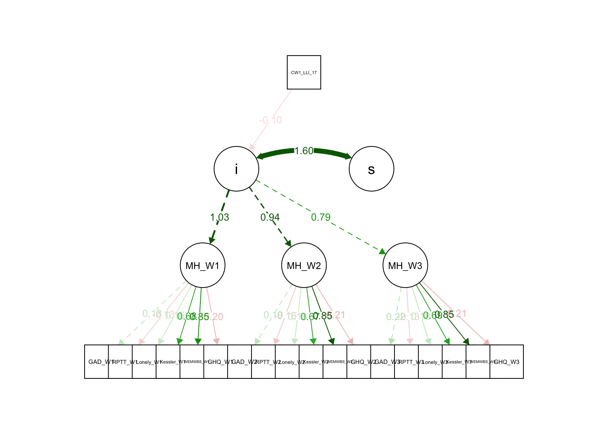

W01_A <- W01_A %>%
mutate(across(c(NCDSID, BCSID, NSID, MCSID), ~ trimws(.)))
# Step 2: Create a new ID column from the first non-missing, non-blank ID
W01_A <- W01_A %>%
mutate(ID = coalesce(
na_if(NCDSID, ""),
na_if(BCSID, ""),
na_if(NSID, ""),
na_if(MCSID, "")
))
# Step 3: Filter out rows with no ID at all
W01_A <- W01_A %>%
filter(!is.na(ID))
W02_A <- W02_A %>%
mutate(across(c(NCDSID, BCSID, NSID, MCSID), ~ trimws(.)))
W02_A <- W02_A %>%
mutate(ID = coalesce(
na_if(NCDSID, ""),
na_if(BCSID, ""),
na_if(NSID, ""),
na_if(MCSID, "")
))
W02_A <- W02_A %>%
filter(!is.na(ID))
W03_A <- W03_A %>%
mutate(across(c(NCDSID, BCSID, NSID, MCSID), ~ trimws(.)))
W03_A <- W03_A %>%
mutate(ID = coalesce(
na_if(NCDSID, ""),
na_if(BCSID, ""),
na_if(NSID, ""),
na_if(MCSID, "")
))
W03_A <- W03_A %>%
filter(!is.na(ID))Data Exploration
Data Exploration
Load the packages. If not installed please install first.
Overview of data
Select Relevant Rows
The study looks into the participants with long-standing illness. Hence the following variable will be selected.
*Demo = Demographic information Acronym
*Mod_ = Moderator
Wave 1
Wave 1 Variable Table
| Type | Variable Acronym | Explanation |
|---|---|---|
| Demo | CW1_PSEX | Sex of Respondent |
| Mod_Cov | CW1_COVIDSYMPT_1 | Past 2 weeks COVID19 symptoms: Fever |
| Mod_Cov | CW1_COVIDSYMPT_2 | Past 2 weeks COVID19 symptoms: Cough - dry |
| Mod_Cov | CW1_COVIDSYMPT_3 | Past 2 weeks COVID19 symptoms: Cough - mucus or phlegm |
| Mod_Cov | CW1_COVIDSYMPT_4 | Past 2 weeks COVID19 symptoms: Sore throat |
| Mod_Cov | CW1_COVIDSYMPT_5 | Past 2 weeks COVID19 symptoms: Chest tightness |
| Mod_Cov | CW1_COVIDSYMPT_6 | Past 2 weeks COVID19 symptoms: Shortness of breath |
| Mod_Cov | CW1_COVIDSYMPT_7 | Past 2 weeks COVID19 symptoms: Runny nose |
| Mod_Cov | CW1_COVIDSYMPT_8 | Past 2 weeks COVID19 symptoms: Nasal congestion |
| Mod_Cov | CW1_COVIDSYMPT_18 | Past 2 weeks COVID19 symptoms: Sneezing |
| Mod_Cov | CW1_COVIDSYMPT_10 | Past 2 weeks COVID19 symptoms: Muscle or body aches |
| Mod_Cov | CW1_COVIDSYMPT_11 | Past 2 weeks COVID19 symptoms: Fatigue |
| Mod_Cov | CW1_COVIDSYMPT_12 | Past 2 weeks COVID19 symptoms: Unusual loose motions or diarrhoea |
| Mod_Cov | CW1_COVIDSYMPT_16 | Past 2 weeks COVID19 symptoms: Vomiting |
| Mod_Cov | CW1_COVIDSYMPT_13 | Past 2 weeks COVID19 symptoms: Loss of smell |
| Mod_Cov | CW1_COVIDSYMPT_14 | Past 2 weeks COVID19 symptoms: Loss of taste |
| Mod_Cov | CW1_COVIDSYMPT_17 | Past 2 weeks COVID19 symptoms: Skin rash |
| Mod_Cov | CW1_COVIDSYMPT_19 | Past 2 weeks COVID19 symptoms: Headaches |
| Mod_Cov | CW1_COVIDSYMPT_20 | Past 2 weeks COVID19 symptoms: Other |
| Mod_Cov | CW1_COVIDSYMPT_23 | Past 2 weeks no COVID19 symptoms experienced |
| Mod_Health | CW1_GHQ | Post-C19: Respondent self-assessment of general health |
| Mod_Health | CW1_GHQPRECOVID | Pre-C19: Respondent self-assessment of general health in 3 months preceding outbreak |
| IV | CW1_LLI_1 | long-standing illness 1: Cancer |
| CW1_LLI_2 | long-standing illness: Cystic fibrosis | |
| CW1_LLI_3 | long-standing illness: Asthma | |
| CW1_LLI_4 | long-standing illness: Chronic Obstructive Pulmonary Disease | |
| CW1_LLI_5 | long-standing illness: Wheezy bronchitis | |
| CW1_LLI_6 | long-standing illness: Diabetes | |
| CW1_LLI_7 | long-standing illness: Recurrent backache/prolapsed disc/sciatica/other back probm | |
| CW1_LLI_8 | long-standing illness: Problems with hearing | |
| CW1_LLI_9 | long-standing illness: High blood pressure | |
| CW1_LLI_10 | long-standing illness: Heart disease, congenital or acquired | |
| CW1_LLI_11 | long-standing illness: Depression or other emotional/nervous/psychiatric probs | |
| CW1_LLI_12 | long-standing illness: Obesity | |
| CW1_LLI_13 | long-standing illness: Chronic Obstructive Airways Disease | |
| CW1_LLI_14 | long-standing illness: Infection | |
| CW1_LLI_15 | long-standing illness: HIV/Immunodeficiency | |
| CW1_LLI_16 | long-standing illness: Conditions affecting the brain and nerves | |
| CW1_LLI_17 | Respondent suffering from a long-standing illness: | |
| Mod_Lonely | CW1_LONELY_1 | How often - lack companionship |
| CW1_LONELY_2 | How often - left out | |
| CW1_LONELY_3 | How often - isolated from others | |
| CW1_LONELY_4 | How often - lonely | |
| DV_Kessler6 | CW1_PHDE | Felt depressed |
| CW1_PHHO | felt hopeless | |
| CW1_PHRF | felt restless | |
| CW1_PHEE | felt everything was an effort | |
| CW1_PHWO | felt worthless | |
| CW1_PHNE | felt nervous | |
| CW1_HARM | has harmed self on purpose | |
| DV_WEMWBS | CW1_WEMWBS_1 | feeling optimistic about the future |
| CW1_WEMWBS_2 | feeling useful | |
| CW1_WEMWBS_3 | feeling relaxed | |
| CW1_WEMWBS_4 | dealing with problems well | |
| CW1_WEMWBS_5 | thinking clearly | |
| CW1_WEMWBS_6 | thinking close to other people | |
| CW1_WEMWBS_7 | able to make up my own mind about things | |
| DV_MALAISE | CW1_MALAISE_1 | feel tired most of the time |
| CW1_MALAISE_2 | feel miserable or depressed | |
| CW1_MALAISE_3 | get worried about things | |
| CW1_MALAISE_4 | get in a violent rage | |
| CW1_MALAISE_5 | suddenly become scared for no good reason | |
| CW1_MALAISE_6 | easily upset or irritated | |
| CW1_MALAISE_7 | constantly keyed up and jittery | |
| CW1_MALAISE_8 | every little thing get on your nerves and wear you out | |
| CW1_MALAISE_9 | heart often race like mad | |
| DV_GHQ | CW1_GHQ121 | able to concentrate |
| CW1_GHQ122 | lost much sleep over worry | |
| CW1_GHQ123 | felt that playing a useful part in things | |
| CW1_GHQ124 | felt capable of making decisions about things | |
| CW1_GHQ125 | felt constantly under strain | |
| CW1_GHQ126 | couldn’t overcome difficulties | |
| CW1_GHQ127 | able to enjoy normal day to day activities | |
| CW1_GHQ128 | able to face up to problems | |
| CW1_GHQ129 | feeling unhappy or depressed | |
| CW1_GHQ1210 | losing confidence in self | |
| CW1_GHQ1211 | thinking of self as a worthless person | |
| CW1_GHQ1212 | feeling reasonably happy | |
| DV_GAD | CW1_GAD2PHQ2_1 | Feeling Nervous, Anxious Or On Edge |
| CW1_GAD2PHQ2_2 | Not Being Able To Stop Or Control Worrying | |
| CW1_GAD2PHQ2_3 | Little Interest Or Pleasure In Doing Things | |
| CW1_GAD2PHQ2_4 | Feeling Down, Depressed Or Hopeless | |
| DV_RPTT | CW1_RISK | willingness to take risks from 0 (Never) to 10 (Always) |
| CW1_PATIENT | how patient Respondent is from 0 (Never) to 10 (Always) | |
| CW1_TRUST | how trusting of others from 0 (Not at all) to 10 (Extremely) | |
| CW1_TRUSTPOLP | how trusting of Govmnt from 0 (Not at all) to 10 (Extremely) |
Select rows from the Wave 1 dataset
Wave 2
Wave 2 Variable Table
| Type | Variable Acronym | Explanation |
|---|---|---|
| Demo | CW2_PSEX | Sex of Respondent |
| Mod_Cov | CW2_COVIDSYMPT_1 | Past 2 weeks COVID19 symptoms: Fever |
| Mod_Cov | CW2_COVIDSYMPT_2 | Past 2 weeks COVID19 symptoms: Cough - dry |
| DV_WEMWBS | CW2_WEMWBS_1 | feeling optimistic about the future |
| CW2_WEMWBS_2 | feeling useful | |
| CW2_WEMWBS_3 | feeling relaxed | |
| CW2_WEMWBS_4 | dealing with problems well | |
| CW2_WEMWBS_5 | thinking clearly | |
| CW2_WEMWBS_6 | feeling close to other people | |
| CW2_WEMWBS_7 | able to make up my own mind about things | |
| DV_GAD | CW2_GAD2PHQ2_1 | Feeling Nervous, Anxious Or On Edge |
| CW2_GAD2PHQ2_2 | Not Being Able To Stop Or Control Worrying | |
| CW2_GAD2PHQ2_3 | Little Interest Or Pleasure In Doing Things | |
| CW2_GAD2PHQ2_4 | Feeling Down, Depressed Or Hopeless | |
| DV_RPTT | CW2_RISK | willingness to take risks from 0 (Never) to 10 (Always) |
| CW2_PATIENT | how patient respondent is from 0 (Never) to 10 (Always) | |
| CW2_TRUST | how trusting of others from 0 (Not at all) to 10 (Extremely) | |
| CW2_TRUSTPOLP | how trusting of Government from 0 (Not at all) to 10 (Extremely) |
Wave 3
Wave 3 Variable Table
| Type | Variable Acronym | Explanation |
|---|---|---|
| Demo | CW3_PSEX | Sex of Respondent |
| Mod_Cov | CW3_COVIDSYMPT_1 | Past 2 weeks COVID19 symptoms: Fever |
| Mod_Cov | CW3_COVIDSYMPT_2 | Past 2 weeks COVID19 symptoms: Cough - dry |
| DV_WEMWBS | CW3_WEMWBS_1 | feeling optimistic about the future |
| CW3_WEMWBS_2 | feeling useful | |
| CW3_WEMWBS_3 | feeling relaxed | |
| CW3_WEMWBS_4 | dealing with problems well | |
| CW3_WEMWBS_5 | thinking clearly | |
| CW3_WEMWBS_6 | feeling close to other people | |
| CW3_WEMWBS_7 | able to make up my own mind about things | |
| DV_MALAISE | CW3_MALAISE_1 | feel tired most of the time |
| CW3_MALAISE_2 | feel miserable or depressed | |
| CW3_MALAISE_3 | get worried about things | |
| CW3_MALAISE_4 | get in a violent rage | |
| CW3_MALAISE_5 | suddenly become scared for no good reason | |
| CW3_MALAISE_6 | easily upset or irritated | |
| CW3_MALAISE_7 | constantly keyed up and jittery | |
| CW3_MALAISE_8 | every little thing gets on your nerves and wears you out | |
| CW3_MALAISE_9 | heart often races like mad | |
| DV_GAD | CW3_GAD2PHQ2_1 | Feeling Nervous, Anxious Or On Edge |
| CW3_GAD2PHQ2_2 | Not Being Able To Stop Or Control Worrying | |
| CW3_GAD2PHQ2_3 | Little Interest Or Pleasure In Doing Things | |
| CW3_GAD2PHQ2_4 | Feeling Down, Depressed Or Hopeless | |
| DV_RPTT | CW3_RISK | willingness to take risks from 0 (Never) to 10 (Always) |
| CW3_PATIENT | how patient respondent is from 0 (Never) to 10 (Always) | |
| CW3_TRUST | how trusting of others from 0 (Not at all) to 10 (Extremely) | |
| CW3_TRUSTPOLP | how trusting of Government from 0 (Not at all) to 10 (Extremely) |
###combine IDs: NCDSID, BCSID,NSID, MCSID
Demographic Exploration
Number of participant how completed from Wave 1 to 3 are 11740
# Step 1: Extract IDs from each wave
ids_w1 <- W01_A$ID
ids_w2 <- W02_A$ID
ids_w3 <- W03_A$ID
# Step 2: Find common IDs across all three waves
common_ids <- Reduce(intersect, list(ids_w1, ids_w2, ids_w3))
# Step 3: Count the number of participants
length(common_ids)[1] 11740Subset datasets to only those participants
W01_complete <- W01_A %>%
filter(ID %in% common_ids)
W02_complete <- W02_A %>%
filter(ID %in% common_ids)
W03_complete <- W03_A %>%
filter(ID %in% common_ids)
#Ensure uniqueness before merging
W01_clean <- W01_complete %>%
group_by(ID) %>%
summarise(across(everything(), ~ first(na.omit(.))), .groups = "drop")
W02_clean <- W02_complete %>%
group_by(ID) %>%
summarise(across(everything(), ~ first(na.omit(.))), .groups = "drop")
W03_clean <- W03_complete %>%
group_by(ID) %>%
summarise(across(everything(), ~ first(na.omit(.))), .groups = "drop")
merged_all <- W01_clean %>%
inner_join(W02_clean, by = "ID") %>%
inner_join(W03_clean, by = "ID")
n_distinct(merged_all$ID)[1] 11740nrow(merged_all) [1] 11740Summary of participants with longterm illness in Wave 1
#List the relevant long-term illness variables in Wave 1
lli_vars <- paste0("CW1_LLI_", 1:17)
#Create a summary table
lli_summary <- merged_all %>%
summarise(
Total_Participants = n(),
across(all_of(lli_vars), ~ sum(. == "Yes", na.rm = TRUE), .names = "n_{.col}")
)
#Rename
summary_out <- t(lli_summary)
rownames(summary_out) <- recode(
rownames(summary_out),
"n_CW1_LLI_1" = "Cancer",
"n_CW1_LLI_2" = "Cystic fibrosis",
"n_CW1_LLI_3" = "Asthma",
"n_CW1_LLI_4" = "Chronic Obstructive Pulmonary Disease",
"n_CW1_LLI_5" = "Wheezy bronchitis",
"n_CW1_LLI_6" = "Diabetes",
"n_CW1_LLI_7" = "Recurrent backache/prolapsed disc/sciatica/other back problem",
"n_CW1_LLI_8" = "Problems with hearing",
"n_CW1_LLI_9" = "High blood pressure",
"n_CW1_LLI_10" = "Heart disease, congenital or acquired",
"n_CW1_LLI_11" = "Depression/emotional/nervous/psychiatric probs ",
"n_CW1_LLI_12" = "Obesity",
"n_CW1_LLI_13" = "Chronic Obstructive Airways Disease",
"n_CW1_LLI_14" = "Infection",
"n_CW1_LLI_15" = "HIV/Immunodeficiency ",
"n_CW1_LLI_16" = "Conditions affecting the brain and nerves",
"n_CW1_LLI_17" = "Any Long Term Illness"
)
print(summary_out) [,1]
Total_Participants 11740
Cancer 178
Cystic fibrosis 0
Asthma 1374
Chronic Obstructive Pulmonary Disease 121
Wheezy bronchitis 54
Diabetes 498
Recurrent backache/prolapsed disc/sciatica/other back problem 1449
Problems with hearing 792
High blood pressure 1509
Heart disease, congenital or acquired 232
Depression/emotional/nervous/psychiatric probs 1379
Obesity 1040
Chronic Obstructive Airways Disease 25
Infection 89
HIV/Immunodeficiency 69
Conditions affecting the brain and nerves 120
Any Long Term Illness 5696Summarise Sex within 2 IV groups
summary_gender <- merged_all %>%
filter(CW1_LLI_17 %in% c("Yes", "No")) %>%
count(CW1_LLI_17, CW1_PSEX, name = "Count") %>%
group_by(CW1_LLI_17) %>%
mutate(Percent = round(Count / sum(Count) * 100, 1)) %>%
ungroup() %>%
mutate(
CW1_LLI_17 = recode(CW1_LLI_17, "Yes" = "Any Long Term Illness", "No" = "No Long Term Illness"),
CW1_PSEX = recode(CW1_PSEX, "Male" = "M", "Female" = "F")
)
print(summary_gender)# A tibble: 4 × 4
CW1_LLI_17 CW1_PSEX Count Percent
<fct> <fct> <int> <dbl>
1 No Long Term Illness M 2151 36.7
2 No Long Term Illness F 3710 63.3
3 Any Long Term Illness M 2183 38.3
4 Any Long Term Illness F 3513 61.7Primary research question:
How does having a long-term illness affect self-reported mental health outcomes during the COVID-19 pandemic, compared to individuals without such conditions?
Recode the questionnaire to get total scores of mental health outcomes
Final check before running Structural Equation Modeling (SEM)
Missing data
library(lavaan)This is lavaan 0.6-19
lavaan is FREE software! Please report any bugs.long_model <- '
# Measurement model
MH_W1 =~ GAD_W1 + RPTT_W1 + Lonely_W1 + Kessler_W1 + WEMWBS_W1 + GHQ_W1
MH_W2 =~ GAD_W2 + RPTT_W2 + Lonely_W2 + Kessler_W2 + WEMWBS_W2 + GHQ_W2
MH_W3 =~ GAD_W3 + RPTT_W3 + Lonely_W3 + Kessler_W3 + WEMWBS_W3 + GHQ_W3
# Latent growth model (intercept and slope)
i =~ 1*MH_W1 + 1*MH_W2 + 1*MH_W3
s =~ 0*MH_W1 + 1*MH_W2 + 2*MH_W3
# Optional: regress intercept and slope on long-term illness group
i ~ CW1_LLI_17
s ~ CW1_LLI_17
'
fit_long <- sem(long_model, data = merged_all, estimator = "MLR", missing = "fiml")Warning: lavaan->lav_data_full():
183 cases were deleted due to missing values in exogenous variable(s),
while fixed.x = TRUE.Warning: lavaan->lav_object_post_check():
some estimated lv variances are negativesummary(fit_long, fit.measures = TRUE, standardized = TRUE)lavaan 0.6-19 ended normally after 211 iterations
Estimator ML
Optimization method NLMINB
Number of model parameters 59
Used Total
Number of observations 11557 11740
Number of missing patterns 1
Model Test User Model:
Standard Scaled
Test Statistic 101150.344 61150.758
Degrees of freedom 148 148
P-value (Chi-square) 0.000 0.000
Scaling correction factor 1.654
Yuan-Bentler correction (Mplus variant)
Model Test Baseline Model:
Test statistic 170346.688 89460.558
Degrees of freedom 171 171
P-value 0.000 0.000
Scaling correction factor 1.904
User Model versus Baseline Model:
Comparative Fit Index (CFI) 0.406 0.317
Tucker-Lewis Index (TLI) 0.314 0.211
Robust Comparative Fit Index (CFI) 0.407
Robust Tucker-Lewis Index (TLI) 0.314
Loglikelihood and Information Criteria:
Loglikelihood user model (H0) -532423.853 -532423.853
Scaling correction factor 2.509
for the MLR correction
Loglikelihood unrestricted model (H1) -481848.681 -481848.681
Scaling correction factor 1.898
for the MLR correction
Akaike (AIC) 1064965.706 1064965.706
Bayesian (BIC) 1065399.653 1065399.653
Sample-size adjusted Bayesian (SABIC) 1065212.158 1065212.158
Root Mean Square Error of Approximation:
RMSEA 0.243 0.189
90 Percent confidence interval - lower 0.242 0.188
90 Percent confidence interval - upper 0.244 0.190
P-value H_0: RMSEA <= 0.050 0.000 0.000
P-value H_0: RMSEA >= 0.080 1.000 1.000
Robust RMSEA 0.243
90 Percent confidence interval - lower 0.241
90 Percent confidence interval - upper 0.244
P-value H_0: Robust RMSEA <= 0.050 0.000
P-value H_0: Robust RMSEA >= 0.080 1.000
Standardized Root Mean Square Residual:
SRMR 0.208 0.208
Parameter Estimates:
Standard errors Sandwich
Information bread Observed
Observed information based on Hessian
Latent Variables:
Estimate Std.Err z-value P(>|z|) Std.lv Std.all
MH_W1 =~
GAD_W1 1.000 0.473 0.181
RPTT_W1 -1.940 0.205 -9.469 0.000 -0.918 -0.126
Lonely_W1 0.716 0.037 19.385 0.000 0.339 0.158
Kessler_W1 5.468 0.275 19.881 0.000 2.588 0.683
WEMWBS_W1 13.695 0.884 15.489 0.000 6.482 0.845
GHQ_W1 -0.784 0.059 -13.298 0.000 -0.371 -0.202
MH_W2 =~
GAD_W2 1.000 0.524 0.193
RPTT_W2 -1.799 0.141 -12.727 0.000 -0.942 -0.157
Lonely_W2 0.687 0.035 19.471 0.000 0.360 0.163
Kessler_W2 5.008 0.199 25.203 0.000 2.622 0.666
WEMWBS_W2 12.556 0.660 19.010 0.000 6.574 0.848
GHQ_W2 -0.889 0.057 -15.636 0.000 -0.465 -0.207
MH_W3 =~
GAD_W3 1.000 0.619 0.217
RPTT_W3 -1.343 0.120 -11.232 0.000 -0.832 -0.132
Lonely_W3 0.670 0.031 21.722 0.000 0.415 0.181
Kessler_W3 4.836 0.200 24.181 0.000 2.996 0.690
WEMWBS_W3 9.994 0.551 18.153 0.000 6.191 0.846
GHQ_W3 -0.782 0.050 -15.578 0.000 -0.485 -0.210
i =~
MH_W1 1.000 1.034 1.034
MH_W2 1.000 0.935 0.935
MH_W3 1.000 0.790 0.790
s =~
MH_W1 0.000 NA NA
MH_W2 1.000 NA NA
MH_W3 2.000 NA NA
Regressions:
Estimate Std.Err z-value P(>|z|) Std.lv Std.all
i ~
CW1_LLI_17 -0.096 0.010 -9.140 0.000 -0.196 -0.098
s ~
CW1_LLI_17 -0.018 0.003 -5.118 0.000 NA NA
Covariances:
Estimate Std.Err z-value P(>|z|) Std.lv Std.all
.i ~~
.s 0.055 0.011 4.913 0.000 1.603 1.603
Intercepts:
Estimate Std.Err z-value P(>|z|) Std.lv Std.all
.GAD_W1 2.075 0.029 70.671 0.000 2.075 0.791
.RPTT_W1 20.726 0.076 271.119 0.000 20.726 2.840
.Lonely_W1 1.847 0.024 78.226 0.000 1.847 0.861
.Kessler_W1 2.414 0.093 25.857 0.000 2.414 0.637
.WEMWBS_W1 6.036 0.247 24.470 0.000 6.036 0.787
.GHQ_W1 0.456 0.019 23.870 0.000 0.456 0.248
.GAD_W2 2.243 0.031 72.612 0.000 2.243 0.826
.RPTT_W2 21.557 0.069 313.059 0.000 21.557 3.584
.Lonely_W2 1.895 0.025 77.288 0.000 1.895 0.858
.Kessler_W2 2.550 0.093 27.480 0.000 2.550 0.648
.WEMWBS_W2 6.350 0.238 26.652 0.000 6.350 0.820
.GHQ_W2 0.584 0.023 25.192 0.000 0.584 0.260
.GAD_W3 2.496 0.034 74.014 0.000 2.496 0.876
.RPTT_W3 20.642 0.069 299.655 0.000 20.642 3.265
.Lonely_W3 2.219 0.026 85.288 0.000 2.219 0.969
.Kessler_W3 2.881 0.107 26.824 0.000 2.881 0.664
.WEMWBS_W3 5.920 0.234 25.301 0.000 5.920 0.809
.GHQ_W3 0.612 0.024 25.097 0.000 0.612 0.265
Variances:
Estimate Std.Err z-value P(>|z|) Std.lv Std.all
.GAD_W1 6.649 0.140 47.642 0.000 6.649 0.967
.RPTT_W1 52.401 0.920 56.958 0.000 52.401 0.984
.Lonely_W1 4.488 0.066 67.484 0.000 4.488 0.975
.Kessler_W1 7.680 0.264 29.124 0.000 7.680 0.534
.WEMWBS_W1 16.794 0.608 27.611 0.000 16.794 0.286
.GHQ_W1 3.251 0.109 29.697 0.000 3.251 0.959
.GAD_W2 7.096 0.141 50.436 0.000 7.096 0.963
.RPTT_W2 35.293 0.622 56.763 0.000 35.293 0.975
.Lonely_W2 4.742 0.070 67.451 0.000 4.742 0.973
.Kessler_W2 8.617 0.280 30.813 0.000 8.617 0.556
.WEMWBS_W2 16.821 0.559 30.077 0.000 16.821 0.280
.GHQ_W2 4.831 0.147 32.770 0.000 4.831 0.957
.GAD_W3 7.734 0.145 53.331 0.000 7.734 0.953
.RPTT_W3 39.272 0.657 59.733 0.000 39.272 0.983
.Lonely_W3 5.071 0.068 74.469 0.000 5.071 0.967
.Kessler_W3 9.862 0.295 33.386 0.000 9.862 0.524
.WEMWBS_W3 15.237 0.486 31.343 0.000 15.237 0.284
.GHQ_W3 5.098 0.149 34.140 0.000 5.098 0.956
.MH_W1 -0.016 0.015 -1.070 0.285 -0.070 -0.070
.MH_W2 -0.071 0.010 -7.001 0.000 -0.258 -0.258
.MH_W3 -0.057 0.020 -2.893 0.004 -0.148 -0.148
.i 0.237 0.028 8.338 0.000 0.990 0.990
.s -0.005 0.009 -0.515 0.607 NA NASEM diagram
#install package if you havent
library(semPlot)
semPaths(
object = fit_long, # Your lavaan model object
what = "std", # Standardized estimates
layout = "tree", # Layout type: "tree", "circle", "spring"
edge.label.cex = 0.8, # Font size for edge labels
sizeMan = 6, # Size of manifest variables
sizeLat = 8, # Size of latent variables
nCharNodes = 0, # Prevent name truncation
residuals = FALSE, # Optional: show/hide residual variances
intercepts = FALSE, # Optional: show/hide intercepts
exoCov = FALSE # Hide covariances among exogenous variables
)Warning in qgraph::qgraph(Edgelist, labels = nLab, bidirectional = Bidir, :
Non-finite weights are omitted